જો આ પ્રશ્નનો જવાબ ન મળ્યો હોય, તો ફરી જુઓ સંદર્ભ fs-id1159977.
જો આ પ્રશ્નનો જવાબ ન મળ્યો હોય, તો ફરી જુઓ સંદર્ભ fs-id1756650.
જો આ પ્રશ્નનો જવાબ ન મળ્યો હોય, તો ફરી જુઓ સંદર્ભ fs-id1971784.
સંયુક્ત સંખ્યાનું અવિભાજ્ય અવયવીકરણ શોધો
અવિભાજ્ય અવયવીકરણ
અવયવવૃક્ષની પદ્ધતિથી અવિભાજ્ય અવયવીકરણ
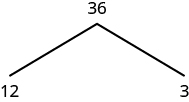
છત્રીસમાંથી ડાબે બાર અને જમણે ત્રણની શાખા. આ પહેલા તબક્કામાં ત્રણની આસપાસ વર્તુળ નથી.
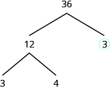
ચિત્રમાં અવયવવૃક્ષ છે, જેની ટોચ પર 36 છે. સંખ્યા 36ની નીચેથી બે શાખા નીકળે છે. જમણી શાખાના છેડે 3 છે અને તેની આસપાસ વર્તુળ છે. ડાબી શાખાના છેડે 12 છે. સંખ્યા 12ની નીચેથી બીજી બે શાખા નીકળે છે. જમણી શાખાના છેડે 4 અને ડાબી શાખાના છેડે 3 છે.
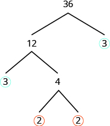
ચિત્રમાં અવયવવૃક્ષ છે, જેની ટોચ પર 36 છે. સંખ્યા 36ની નીચેથી બે શાખા નીકળે છે. જમણી શાખાના છેડે 3 છે અને તેની આસપાસ વર્તુળ છે. ડાબી શાખાના છેડે 12 છે. સંખ્યા 12ની નીચેથી બીજી બે શાખા નીકળે છે. જમણી શાખાના છેડે 4 અને ડાબી શાખાના છેડે 3 છે, જેની આસપાસ વર્તુળ છે. સંખ્યા 4ની નીચેથી બીજી બે શાખા નીકળે છે. ડાબી અને જમણી બંને શાખાના છેડે 2 છે અને બંનેની આસપાસ વર્તુળ છે.
અવયવવૃક્ષની પદ્ધતિથી સંયુક્ત સંખ્યાનું અવિભાજ્ય અવયવીકરણ શોધો.
- આપેલી સંખ્યાના અવયવની કોઈ પણ જોડી શોધો અને આ બે સંખ્યાથી બે શાખા બનાવો.
- જો અવયવ અવિભાજ્ય હોય, તો તે શાખા પૂરી થઈ. અવિભાજ્ય સંખ્યાની આસપાસ વર્તુળ કરો.
- જો અવયવ અવિભાજ્ય ન હોય, તો તેને અવયવની જોડીના ગુણનફળ તરીકે લખો અને પ્રક્રિયા ચાલુ રાખો.
- સંયુક્ત સંખ્યાને વર્તુળ કરેલી બધી અવિભાજ્ય સંખ્યાઓના ગુણનફળ તરીકે લખો.
ઉકેલ
વૃક્ષની શરૂઆત કોઈ પણ અવયવજોડીથી કરી શકીએ, આ સંખ્યાની: 48. આ જોડી લઈએ: 2 અને 24. અવયવ 2ની આસપાસ વર્તુળ કરીએ, કારણ કે તે અવિભાજ્ય છે અને તે શાખા પૂરી થઈ. |
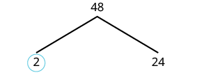 અવયવવૃક્ષમાં સંખ્યા 48માંથી તેના અવયવ તરફ શાખા નીકળે છે. તેની તરત નીચે 2 અને 24 છે; સંખ્યા 2ની આસપાસ વર્તુળ છે. |
| હવે અવયવીકરણ કરીએ, આ સંખ્યાનું: 24. આ જોડી લઈએ: 4 અને 6. | 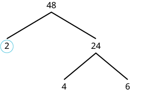 આંશિક રીતે પૂરું થયેલું અવયવવૃક્ષ સંખ્યા 48નું અવિભાજ્ય અવયવીકરણ દર્શાવે છે. અવિભાજ્ય અવયવ 2ની આસપાસ વર્તુળ છે અને 24, 4 તથા 6 માટે શાખાઓ છે. |
બંનેમાંથી કોઈ અવયવ અવિભાજ્ય નથી, તેથી એકેયની આસપાસ વર્તુળ ન કરીએ. અવયવીકરણ કરીએ, આ સંખ્યાનું: 4; અવયવ લઈએ 2 અને 2. અવયવીકરણ કરીએ, આ સંખ્યાનું: 6; અવયવ લઈએ 2 અને 3. બધા 2 અને એક 3ની આસપાસ વર્તુળ કરીએ, કારણ કે તેઓ અવિભાજ્ય છે. હવે બધી શાખાના છેડે અવિભાજ્ય સંખ્યા છે. |
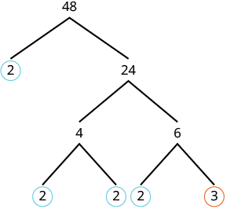 અવયવવૃક્ષ સંખ્યા 48નું અવિભાજ્ય અવયવીકરણ દર્શાવે છે: તેના અવિભાજ્ય અવયવ 2, 2, 2, 2 અને 3 છે, જેમનો ગુણાકાર કરતાં 48 મળે છે. આ રીત સંખ્યાને તેના મૂળભૂત અવિભાજ્ય ઘટકોમાં વહેંચે છે. |
| વર્તુળ કરેલી સંખ્યાઓનું ગુણનફળ લખો. | |
| ઘાતના સ્વરૂપમાં લખો. |
ઉકેલ
અવયવની આ જોડીથી શરૂઆત કરીએ: 4 અને 21. બંનેમાંથી કોઈ અવયવ અવિભાજ્ય નથી, તેથી વધુ અવયવીકરણ કરીએ. |
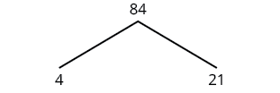 અવયવવૃક્ષમાં સંખ્યા 84માંથી તેના અવયવ 4 અને 21 તરફ શાખા નીકળે છે. |
| હવે બધા અવયવ અવિભાજ્ય છે, તેથી તેમની આસપાસ વર્તુળ કરીએ. | 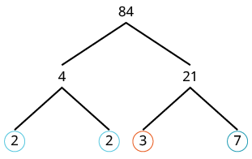 અવિભાજ્ય અવયવીકરણનું વૃક્ષ બતાવે છે કે સંખ્યા 84ને તેના અવિભાજ્ય અવયવમાં કેવી રીતે વહેંચી શકાય: 2, 2, 3 અને 7. |
| પછી આ સંખ્યાને, 84, વર્તુળ કરેલી બધી અવિભાજ્ય સંખ્યાઓના ગુણનફળ તરીકે લખીએ. |
નિસરણીની પદ્ધતિથી અવિભાજ્ય અવયવીકરણ
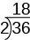
ચિત્રમાં 2 વડે 36ને ભાગતાં ભાગફળ 18 મળે છે. ભાગાકારના કૌંસની બહાર ડાબે 2, અંદર 36 અને ઉપર 18 છે; તે 36ની ઉપર કૌંસની બહાર છે.
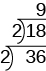
ચિત્રમાં 2 વડે 36ને ભાગતાં ભાગફળ 18 મળે છે. ભાગાકારના કૌંસની બહાર ડાબે 2, અંદર 36 અને ઉપર 18 છે; તે 36ની ઉપર કૌંસની બહાર છે. ભાગફળ 18ની આસપાસ બીજો ભાગાકારનો કૌંસ છે; બહાર ડાબે 2 અને ઉપર 9 છે, જે 18ની ઉપર કૌંસની બહાર છે.
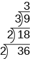
ચિત્રમાં 2 વડે 36ને ભાગતાં ભાગફળ 18 મળે છે. ભાગાકારના કૌંસની બહાર ડાબે 2, અંદર 36 અને ઉપર 18 છે; તે 36ની ઉપર કૌંસની બહાર છે. ભાગફળ 18ની આસપાસ બીજો ભાગાકારનો કૌંસ છે; બહાર ડાબે 2 અને ઉપર 9 છે, જે 18ની ઉપર કૌંસની બહાર છે. ભાગફળ 9ની આસપાસ બીજો ભાગાકારનો કૌંસ છે; બહાર ડાબે 3 અને ઉપર 3 છે, જે 9ની ઉપર કૌંસની બહાર છે.
નિસરણીની પદ્ધતિથી સંયુક્ત સંખ્યાનું અવિભાજ્ય અવયવીકરણ શોધો.
- સંખ્યાને સૌથી નાની અવિભાજ્ય સંખ્યા વડે ભાગો.
- તે અવિભાજ્ય સંખ્યા વડે નિઃશેષ ભાગી શકાય ત્યાં સુધી વારંવાર ભાગો.
- પછીની અવિભાજ્ય સંખ્યા વડે નિઃશેષ ભાગી શકાય ત્યાં સુધી ભાગો.
- ભાગફળ અવિભાજ્ય સંખ્યા થાય ત્યાં સુધી ચાલુ રાખો.
- સંયુક્ત સંખ્યાને નિસરણીની બાજુઓ અને ટોચ પરની બધી અવિભાજ્ય સંખ્યાઓના ગુણનફળ તરીકે લખો.
ઉકેલ
| સૌથી નાની અવિભાજ્ય સંખ્યા વડે ભાગો; તે છે 2. | 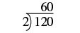 લાંબા ભાગાકારમાં 120ને ભાગ્યા છે 2 વડે; ભાગફળ 60 ભાગાકારની રેખાની ઉપર છે. ભાજક 2, ભાજ્ય 120 અને ભાગાકારનું પરિણામ 60 છે. |
| વારંવાર ભાગો 2 વડે, જ્યાં સુધી નિઃશેષ ભાગી શકાય. | 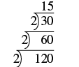 લાંબા ભાગાકારની શ્રેણી વારંવાર ભાગવાનું દર્શાવે છે, આના વડે: 2. પહેલા 120 ભાગ્યા 2 બરાબર 60, પછી 60 ભાગ્યા 2 બરાબર 30 અને પછી 30 ભાગ્યા 2 બરાબર 15. |
| પછીની અવિભાજ્ય સંખ્યા વડે ભાગો: 3. | 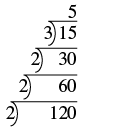 વારંવાર ભાગાકાર કરીને 120નું અવિભાજ્ય અવયવીકરણ કરતાં અવયવ મળે છે: 2, 2, 2, 3 અને 5. |
| ભાગફળ 5 અવિભાજ્ય હોવાથી નિસરણી પૂરી થઈ. આ સંખ્યાનું અવિભાજ્ય અવયવીકરણ લખો: 120. |
ઉકેલ
| સૌથી નાની અવિભાજ્ય સંખ્યા વડે ભાગો: 2. | 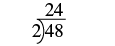 અડતાલીસ ભાગ્યા બે બરાબર ચોવીસ. ભાગફળ ચોવીસ ભાજ્યની ઉપર આડી રેખાની બહાર છે, ભાજકની ઉપર નહીં. |
| વારંવાર ભાગો 2 વડે, જ્યાં સુધી નિઃશેષ ભાગી શકાય. | 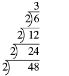 વારંવાર ભાગાકાર કરવાની ક્રમશઃ રીત, આના વડે: 2. તેમાં 48ને વારંવાર ભાગ્યા છે 2 વડે, જ્યાં સુધી 3 મળે. દર્શાવેલા ભાગાકાર છે: 48/2=24, 24/2=12, 12/2=6 અને 6/2=3. |
| ભાગફળ 3 અવિભાજ્ય હોવાથી નિસરણી પૂરી થઈ. આ સંખ્યાનું અવિભાજ્ય અવયવીકરણ લખો: 48. |
બે સંખ્યાઓનો લઘુત્તમ સામાન્ય અવયવી (LCM) શોધો
અવયવીની યાદી બનાવવાની પદ્ધતિ
અવયવીની યાદી બનાવીને બે સંખ્યાઓનો લઘુત્તમ સામાન્ય અવયવી (LCM) શોધો.
- દરેક સંખ્યાના શરૂઆતના કેટલાક અવયવીની યાદી બનાવો.
- બંને યાદીમાં આવતા સામાન્ય અવયવી શોધો. જો કોઈ સામાન્ય અવયવી ન હોય, તો દરેક સંખ્યાના વધુ અવયવી લખો.
- બંને યાદીમાં આવતી સૌથી નાની સંખ્યા શોધો.
- આ સંખ્યા લઘુત્તમ સામાન્ય અવયવી છે.
ઉકેલ
અવિભાજ્ય અવયવની પદ્ધતિ
લઘુત્તમ સામાન્ય અવયવી (LCM)
બારના અવયવ બે, બે, ત્રણ અને અઢારના અવયવ બે, ત્રણ, ત્રણ છે. ચાર સ્તંભમાં ગોઠવણી: બંનેનો પહેલો બે; માત્ર બારનો બીજો બે; બંનેનો પહેલો ત્રણ; માત્ર અઢારનો બીજો ત્રણ. દરેક સ્તંભથી એક અવયવ નીચે ઉતારતાં લઘુત્તમ સામાન્ય અવયવી બે ગુણ્યા બે ગુણ્યા ત્રણ ગુણ્યા ત્રણ બરાબર છત્રીસ. મૂળમાં અંતિમ છત્રીસની અલગ લીટી પણ છે.
અવિભાજ્ય અવયવની પદ્ધતિથી LCM શોધો.
- દરેક સંખ્યાનું અવિભાજ્ય અવયવીકરણ શોધો.
- દરેક સંખ્યાને અવિભાજ્ય સંખ્યાઓના ગુણનફળ તરીકે લખો. શક્ય હોય ત્યાં સમાન અવિભાજ્ય અવયવ એકની નીચે એક ગોઠવો.
- દરેક સ્તંભની અવિભાજ્ય સંખ્યા નીચે ઉતારો.
- અવયવોનો ગુણાકાર કરીને LCM મેળવો.
ઉકેલ
| દરેક સંખ્યાને અવિભાજ્ય સંખ્યાઓના ગુણનફળ તરીકે લખો. | 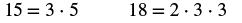 ચિત્રમાં બે સંખ્યાનું અવિભાજ્ય અવયવીકરણ છે: સંખ્યા 15ને 3 ગુણ્યા 5 તરીકે અને 18ને 2 ગુણ્યા 3 ગુણ્યા 3 તરીકે દર્શાવી છે. |
| દરેક સંખ્યાને અવિભાજ્ય સંખ્યાઓના ગુણનફળ તરીકે લખો. શક્ય હોય ત્યાં સમાન અવિભાજ્ય અવયવ એકની નીચે એક ગોઠવો. | 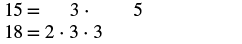 આ સંખ્યાઓનું અવિભાજ્ય અવયવીકરણ સ્પષ્ટ અને ટૂંકા સ્વરૂપમાં દર્શાવ્યું છે: 15 (3 * 5) અને 18 (2 * 3 * 3). |
| દરેક સ્તંભની અવિભાજ્ય સંખ્યા નીચે ઉતારો. | લઘુત્તમ સામાન્ય અવયવી (LCM) અવિભાજ્ય અવયવીકરણથી લઘુત્તમ સામાન્ય અવયવી (LCM) શોધવાની રીત દર્શાવી છે, આ સંખ્યાઓનો: 15 અને 18. અહીં 15 = 3 * 5 અને 18 = 2 * 3 * 3 છે. LCMમાં આ અવયવ ભેગા થાય છે: 2 * 3 * 3 * 5. |
| અવયવોનો ગુણાકાર કરીને LCM મેળવો. | આ સંખ્યાઓનો LCM: 15 અને 18, છે 90. |
ઉકેલ
| દરેક સંખ્યાનું અવિભાજ્ય અવયવીકરણ લખો. | ચિત્રમાં સંખ્યા 50નું અવિભાજ્ય અવયવીકરણ 2 ગુણ્યા 5 ગુણ્યા 5 તરીકે અને સંખ્યા 100નું અવિભાજ્ય અવયવીકરણ 2 ગુણ્યા 2 ગુણ્યા 5 ગુણ્યા 5 તરીકે છે. |
| દરેક સંખ્યાને અવિભાજ્ય સંખ્યાઓના ગુણનફળ તરીકે લખો. શક્ય હોય ત્યાં સમાન અવિભાજ્ય અવયવ એકની નીચે એક ગોઠવો. | 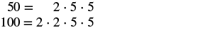 સફેદ પૃષ્ઠભૂમિ પર આ સંખ્યાઓનું અવિભાજ્ય અવયવીકરણ દર્શાવ્યું છે: 50 (2*5*5) અને 100 (2*2*5*5). |
| દરેક સ્તંભની અવિભાજ્ય સંખ્યા નીચે ઉતારો. | લઘુત્તમ સામાન્ય અવયવી (LCM) ચિત્ર અવિભાજ્ય અવયવીકરણ વડે લઘુત્તમ સામાન્ય અવયવી (LCM)ની ગણતરી દર્શાવે છે, આ સંખ્યાઓ માટે: 50 અને 100. તેમાં 50ને 2 ગુણ્યા 5 ગુણ્યા 5 તરીકે અને 100ને 2 ગુણ્યા 2 ગુણ્યા 5 ગુણ્યા 5 તરીકે દર્શાવતાં LCM મળે છે: 2 ગુણ્યા 2 ગુણ્યા 5 ગુણ્યા 5. |
| અવયવોનો ગુણાકાર કરીને LCM મેળવો. | આ સંખ્યાઓનો LCM: 50 અને 100, છે 100. |
વધારાનાં ઑનલાઇન સંસાધનો જુઓ
- ઉદાહરણ 1: અવિભાજ્ય અવયવીકરણ
- ઉદાહરણ 2: અવિભાજ્ય અવયવીકરણ
- ઉદાહરણ 3: અવિભાજ્ય અવયવીકરણ
- ઉદાહરણ 1: એકની ઉપર એક ભાગાકાર ગોઠવીને અવિભાજ્ય અવયવીકરણ
- ઉદાહરણ 2: એકની ઉપર એક ભાગાકાર ગોઠવીને અવિભાજ્ય અવયવીકરણ
- લઘુત્તમ સામાન્ય અવયવી
- ઉદાહરણ: અવયવીની યાદીથી લઘુત્તમ સામાન્ય અવયવી શોધવો
- ઉદાહરણ: અવિભાજ્ય અવયવીકરણથી લઘુત્તમ સામાન્ય અવયવી શોધવો
મુખ્ય સંકલ્પનાઓ
- અવયવવૃક્ષની પદ્ધતિથી સંયુક્ત સંખ્યાનું અવિભાજ્ય અવયવીકરણ શોધો.
- આપેલી સંખ્યાના અવયવની કોઈ પણ જોડી શોધો અને આ બે સંખ્યાથી બે શાખા બનાવો.
- જો અવયવ અવિભાજ્ય હોય, તો તે શાખા પૂરી થઈ. અવિભાજ્ય સંખ્યાની આસપાસ વર્તુળ કરો.
- જો અવયવ અવિભાજ્ય ન હોય, તો તેને અવયવની જોડીના ગુણનફળ તરીકે લખો અને પ્રક્રિયા ચાલુ રાખો.
- સંયુક્ત સંખ્યાને વર્તુળ કરેલી બધી અવિભાજ્ય સંખ્યાઓના ગુણનફળ તરીકે લખો.
- નિસરણીની પદ્ધતિથી સંયુક્ત સંખ્યાનું અવિભાજ્ય અવયવીકરણ શોધો.
- સંખ્યાને સૌથી નાની અવિભાજ્ય સંખ્યા વડે ભાગો.
- તે અવિભાજ્ય સંખ્યા વડે નિઃશેષ ભાગી શકાય ત્યાં સુધી વારંવાર ભાગો.
- પછીની અવિભાજ્ય સંખ્યા વડે નિઃશેષ ભાગી શકાય ત્યાં સુધી ભાગો.
- ભાગફળ અવિભાજ્ય સંખ્યા થાય ત્યાં સુધી ચાલુ રાખો.
- સંયુક્ત સંખ્યાને નિસરણીની બાજુઓ અને ટોચ પરની બધી અવિભાજ્ય સંખ્યાઓના ગુણનફળ તરીકે લખો.
- અવયવીની યાદી બનાવીને LCM શોધો.
- દરેક સંખ્યાના શરૂઆતના કેટલાક અવયવીની યાદી બનાવો.
- બંને યાદીમાં આવતા સામાન્ય અવયવી શોધો. જો કોઈ સામાન્ય અવયવી ન હોય, તો દરેક સંખ્યાના વધુ અવયવી લખો.
- બંને યાદીમાં આવતી સૌથી નાની સંખ્યા શોધો.
- આ સંખ્યા લઘુત્તમ સામાન્ય અવયવી છે.
- અવિભાજ્ય અવયવની પદ્ધતિથી LCM શોધો.
- દરેક સંખ્યાનું અવિભાજ્ય અવયવીકરણ શોધો.
- દરેક સંખ્યાને અવિભાજ્ય સંખ્યાઓના ગુણનફળ તરીકે લખો. શક્ય હોય ત્યાં સમાન અવિભાજ્ય અવયવ એકની નીચે એક ગોઠવો.
- દરેક સ્તંભની અવિભાજ્ય સંખ્યા નીચે ઉતારો.
- અવયવોનો ગુણાકાર કરીને LCM મેળવો.
વિભાગનો અભ્યાસ
અભ્યાસથી નિપુણતા
રોજિંદા જીવનમાં ગણિત
લેખન અભ્યાસ
સ્વમૂલ્યાંકન
| હું કરી શકું છું… | આત્મવિશ્વાસથી | થોડી મદદથી | ના—મને સમજાતું નથી! |
|---|---|---|---|
| સંયુક્ત સંખ્યાનું અવિભાજ્ય અવયવીકરણ શોધવું. | |||
| બે સંખ્યાઓનો લઘુત્તમ સામાન્ય અવયવી (LCM) શોધવો. |
ગણિતની કુશળતાનું સ્વમૂલ્યાંકન કોષ્ટક: અવિભાજ્ય અવયવીકરણ અને લઘુત્તમ સામાન્ય અવયવી (LCM). શીખનાર પોતાની સમજને આત્મવિશ્વાસથી, થોડી મદદથી, અથવા ના—મને સમજાતું નથી! તરીકે આંકી શકે છે.
પ્રકરણના પુનરાવર્તનનો અભ્યાસ
બીજગણિતની ભાષાનો ઉપયોગ કરો
પદાવલીઓની કિંમત શોધો, સરળ કરો અને શબ્દોને પદાવલીમાં ફેરવો
સમાનતાના બાદબાકી અને સરવાળાના ગુણધર્મો વડે સમીકરણો ઉકેલો
- ⓐ
- ⓑ
- ⓐ હા
- ⓑ ના
- ⓐ
- ⓑ
- ⓐ
- ⓑ
- ⓐ હા
- ⓑ ના
- ⓐ
- ⓑ
- ⓐ
- ⓑ
- ⓐ ના
- ⓑ હા
- ⓐ
- ⓑ
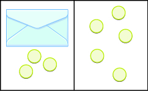
ડાબે વાદળી પરબીડિયું અને 3 ગોળી; જમણે 5 ગોળી. ગોળીઓ આછા પીળા રંગની અને આછા લીલા કિનારાવાળી છે.
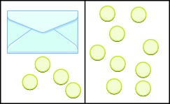
ડાબે વાદળી પરબીડિયું અને 4 ગોળી; જમણે 9 ગોળી. ગોળીઓ આછા પીળા રંગની અને આછા લીલા કિનારાવાળી છે.
અવયવી અને અવયવ શોધો
અવિભાજ્ય અવયવીકરણ અને લઘુત્તમ સામાન્ય અવયવી
રોજિંદા જીવનમાં ગણિત
પ્રકરણની અભ્યાસ કસોટી
- ⓐ લખો ઘાતના સ્વરૂપમાં.
- ⓑ લખો વિસ્તૃત સ્વરૂપમાં, પછી સરળ કરો.
- ⓐ n6
- ⓑ 3 ⋅ 3 ⋅ 3 ⋅ 3 ⋅ 3 = 243
- ⓐ
- ⓑ